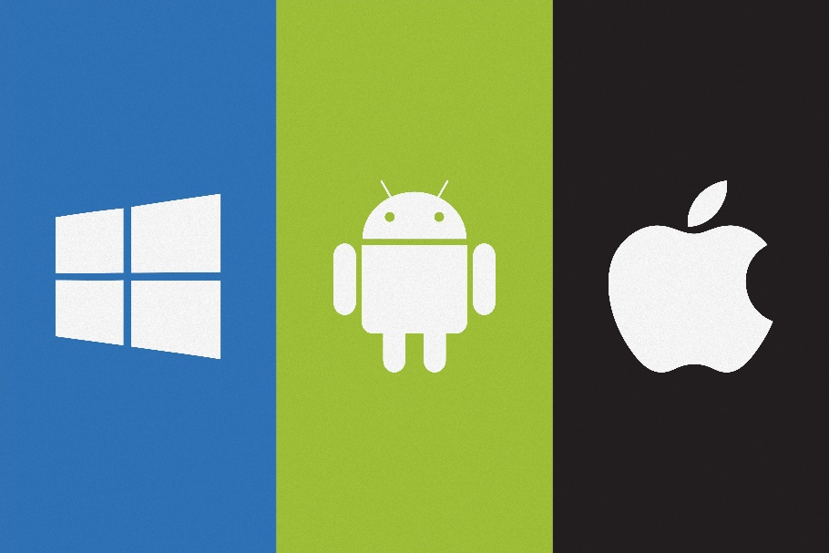
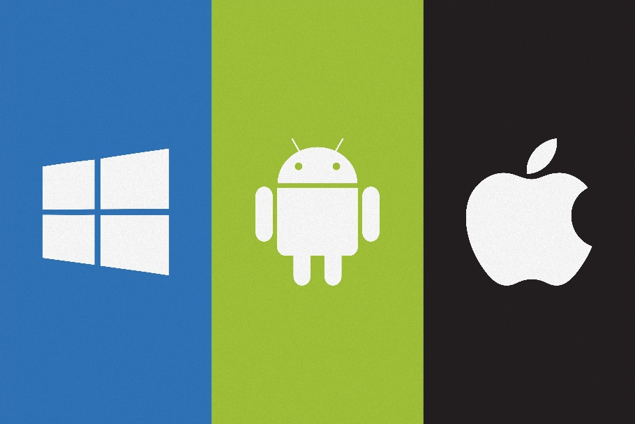
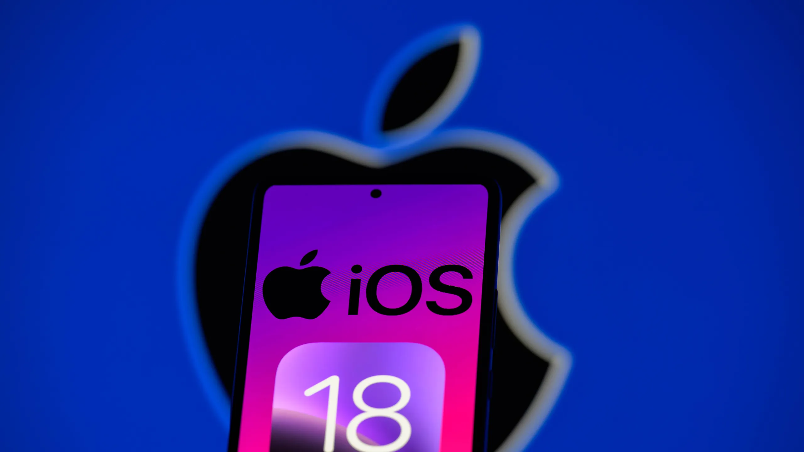

Sistemas Operativos Móviles

TRABAJO DE INVESTIGACIÓN
TRABAJO DE INVESTIGACIÓN
Si alguna vez escuchaste la definición de sistema, lo primero que se te viene a la mente es un conjunto de partes que, mediante su funcionamiento simultáneo, hace posible el proceso de ejecución que ordene el usuario. De esta manera, al igual que otros equipos de sobremesa como las computadoras, laptops, entre otros, manejan grandes cantidades de código fuente en su software (programas) mediante un Sistema “Operativo” (llamado así porque permite la ejecución del código). Asimismo, los dispositivos móviles también hacen uso de un SO (Sistema Operativo) Móvil que posibilita el uso de software en este tipo de equipos, mejorando la portabilidad y facilitando el acceso a todo tipo de programa con tan solo un dedo.
 

Por esta razón, y teniendo en cuenta algunos conceptos básicos de informática, en este blog haré hincapié en resaltar estos "conceptos" para que personas alejadas del tema tengan alguna noción de lo que se verá:
“Un Sistema operativo móvil o SO móvil es un conjunto de programas que permite la abstracción de las peculiaridades específicas del teléfono móvil, y provee servicios a las aplicaciones móviles que se ejecutan sobre el teléfono. Al igual que los computadores que utilizan Windows, Linux o MacOS, los dispositivos móviles tienen sus sistemas operativos como Android, iOS, entre otros.”
WIKIMEDIA, Sistema operativo móvil. 2009. [Acceso: 24 octubre 2009].
El concepto de "sistema operativo móvil" no solo se limita a la gestión básica de recursos del dispositivo, sino que también está estrechamente vinculado a las características únicas de los smartphones y otros dispositivos portátiles. Estos sistemas operativos permiten una integración profunda entre el hardware y las aplicaciones, asegurando que funciones como la conectividad, la seguridad y la eficiencia energética estén perfectamente optimizadas. Las características clave incluyen la multitarea eficiente, la interfaz táctil intuitiva y el soporte para aplicaciones móviles, lo que permite a los usuarios disfrutar de una experiencia fluida y adaptada a sus necesidades. Además, el sistema operativo debe gestionar de manera eficaz las actualizaciones de software y mantener una compatibilidad con una amplia variedad de aplicaciones disponibles en las tiendas oficiales, lo que hace que sistemas como Android e iOS sean esenciales en la vida cotidiana de los usuarios de dispositivos móviles.
Algunas de las características más resaltantes de los sistemas operativos móviles son:
Fuente(s):
"Pues sí, cada fabricante de teléfonos móviles elige el sistema operativo que introducirá en su Smartphone, intentando mejorar a la competencia y dar el mejor servicio a sus usuarios. Vamos a ver aquí las marcas más vendidas y el sistema operativo que utilizan, recordando que en cualquier momento el fabricante puede cambiar de sistema operativo por estrategia comercial o por cualquier otro motivo."
Arte y Tecnología. Sistemas Operativos Móviles para Celulares. Tecnología Fácil: Electricidad, Electrónica, Informática, etc. [en línea].
2. Sistemas Operativos Móviles: ¿Qué es?, Características y funciones